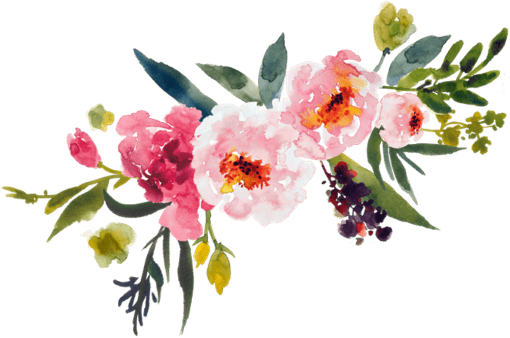

Among tulip multiplicities, the purple variety remains to stand out in your backyard garden. Just like the rest, this fine-looking native to Central Asia has vast, symmetric petals.The perennial which mostly blooms during the spring are best cultivated within cool, temperate climate. Additionally, this plant surely needs right maintenance. In spite of the correct raising, the purple tulip is basically easy to grow under either full sun or partial shade. If you are about to multiply this species, it is pretty important to check out the flower bulb. For the amazing result, we recommend you to pick the largest one. The future plant indeed has stronger stems with more flowers.
To touch up the home borders, there is nothing more relevant other than growing the marigold or recognized as Tagetes.Having this herbaceous
plant has a lot of benefits – it is undoubtedly easy to grow, loves full sun exposure, and handy for the natural pesticide. Although it’s scattered across the globe, the lady
originates from America. Growing Tagetes is such an effortless task. You need to spread the seeds on the moist ground and let them under the sun. For the fertilizer, you can take
advantage of used worm tea.
Although this flower consisting of three main shades sounds colorful, black dominantly covers up the petal. Pansy has a wide range of names such as Jhonny Jump Up, tickle-my-fancy, and three faces in a hood. It is a European wildflower commonly found in the woodland and prairie, yet, this lady is nice for the floral decoration. Aside from being used for garden’s ornament purpose, Viola tricolor has varied benefits regarding the health issues like asthma, whooping cough, and skin diseases.
| ФИО | Иванов Иван Иванович | ||
|---|---|---|---|
|  | Адрес: ул. Белорусская, д.5, ком.430 | ||
| 1 семестр 2016/2017 уч.года |
Дата | Предмет | Оценка |
| 31.12.2016 | ОАиП | 6 | |
| 05.01.2017 | Физика | 9 | |
| 11.01.2017 | ОИТ | 4 | |
| 16.01.2017 | Математика | 6 | |
| 22.01.2017 | АЛОЦВМ | 8 | |